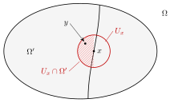

Proposition 1.2.1. Let $\varphi \in \mathrm{PSH}(X)$. Then for any $p\geq 1$, $\varphi \in L^ p_{\mathrm{loc}}(X)$.
1.2 Properties of plurisubharmonic functions6C47792FE6D9
In this section, we explore the basic properties of plurisubharmonic functions.
Let $X$ be a complex manifold.
Proof. It suffices to work near a point $x$ in a positive-dimensional chart. The Lelong number $\nu(\varphi,x)$ is finite. Choose $c>0$ with $c\nu(\varphi,x)<1$. The upper bound in the multiplier-ideal order estimate gives \[0\leq\operatorname{ord}_x\mathcal I(c\varphi)\leq c\nu(\varphi,x)<1.\] This integral order is zero; hence the ideal contains a germ nonvanishing at $x$, so $\exp(-c\varphi)$ is integrable on a neighborhood of $x$. After subtracting a local upper bound for $\varphi$, assume $\varphi\leq0$. For every finite $p\geq1$, the elementary bound $t^p\leq C_{p,c}\exp(ct)$ for $t\geq0$ now proves local integrability of $|\varphi|^p$. Finitely many such neighborhoods cover each compact set. In dimension zero the function is finite at every point, so the assertion is immediate.
Assume that $(\varphi _ i)_{i\in I}$ is a non-empty family in $\mathrm{PSH}(X)$ that is locally uniformly bounded from above. Then $\operatorname *{sup}_{i\in I}{}\! {}^{*} \varphi _ i\in \mathrm{PSH}(X)$.
Assume that $(\varphi _ i)_{i\in I}$ is a decreasing net in $\mathrm{PSH}(X)$ such that $\varphi \coloneqq \inf _{i\in I}\varphi _ i$ is not identically $-\infty $ on any connected component of $X$. Then $\varphi \in \mathrm{PSH}(X)$. Furthermore, $\varphi _ i\xrightarrow {L^1_{\mathrm{loc}}} \varphi $.
Proof. For the upper envelope, the upper-envelope theorem applies exactly to the given nonempty, locally uniformly upper-bounded family; its conclusion is that the upper semicontinuous regularization of its supremum is plurisubharmonic. For a decreasing net, the decreasing-net theorem gives, on each connected component, either a plurisubharmonic limit or the limit identically $-\infty$, with the local convergence asserted there. Applying these results in charts and using uniqueness of representatives on overlaps proves the statements on a manifold. No passage from an arbitrary net to a supposedly cofinal sequence is needed.
\[ \operatorname *{sup}_{i\in I}{}\! {}^{*}\varphi _ i= \sup _{i\in I}\varphi _ i. \]
When $I=\{ 1,\ldots ,m\} $, we write
\[ \varphi _1\lor \cdots \lor \varphi _ m\coloneqq \sup _{i\in I}\varphi _ i. \]
We refer to [Proposition 1.28, Proposition 1.40, GZ17].
Proposition 1.2.3 (Choquet's lemma). Assume that $X$ has countably many connected components. Assume that $(\varphi _ i)_{i\in I}$ is a non-empty family in $\mathrm{PSH}(X)$ that is locally uniformly bounded from above. There exists a countable subset $J\subseteq I$ such that
\[ \operatorname *{sup}_{i\in I}{}\! {}^{*} \varphi _ i=\operatorname *{sup}_{j\in J}{}\! {}^{*} \varphi _ j. \]
Proof. We may assume that $X$ is connected. Since by our convention, the complex manifold $X$ is paracompact, it can be covered by countably many holomorphic balls, so we can easily reduce to the case where $X$ is an open ball in $\mathbb {C}^ n$. In this case, the result is proved in [Lemma 4.31, GZ17]. $\square$
Proposition 1.2.4. A pluripolar set $E\subseteq X$ is a Lebesgue null set.
Proof. This is a trivial consequence of proposition 1.2.1. $\square$
Proposition 1.2.5. Let $(\varphi _ i)_{i\in I}$ be a non-empty family in $\mathrm{PSH}(X)$ that is locally uniformly bounded from above. Then the set
\[ \left\{ x\in X: \sup _{i\in I}\varphi _ i<\operatorname *{sup}_{i\in I}{}\! {}^{*}\varphi _ i \right\} \]
is pluripolar and hence Lebesgue null.
Proof. Put $u=\sup_i\varphi_i$ and $v=u^*$. By the pluripolar discrepancy theorem, $\{u<v\}$ is pluripolar. The stronger local conclusion in the upper-envelope theorem says that the same discrepancy set is real polar in each coordinate chart. Thus both asserted notions of polarity follow from the proved envelope construction, rather than from an assumed measurability of an arbitrary supremum. The conclusion is local, as are the definitions of polar and pluripolar subsets of $X$.
Proposition 1.2.6. Suppose that $\varphi ,\psi \in \mathrm{PSH}(X)$. If $\varphi \leq \psi $ almost everywhere, then $\varphi \leq \psi $ everywhere.
In particular, if $\varphi =\psi $ almost everywhere, then $\varphi =\psi $ everywhere.
Proof. Replace $\varphi $ by $\varphi \lor \psi $. Then $\varphi ,\psi $ are two plurisubharmonic functions that coincide almost everywhere. The uniqueness statement in theorem 1.1.14 gives $\varphi =\psi $. $\square$
Proposition 1.2.7. Let $(E_ i)_{i\in \mathbb {Z}_{>0}}$ be a sequence of pluripolar sets in $X$. Then
\[ E\coloneqq \bigcup _{i=1}^{\infty }E_ i \]
is also pluripolar.
Proof. The problem is local, so we may assume that $X\subseteq \mathbb {C}^ n$ is a bounded domain. In this case, by theorem 1.1.16 for each $i\in \mathbb {Z}_{>0}$ we can choose $\psi _ i\in \mathrm{PSH}(\mathbb {C}^ n)$ such that
\[ \psi _ i|_{E_ i}\equiv -\infty ,\quad \psi _ i|_ X\leq 0 \]
for all $i>0$. By proposition 1.2.1, we have $\psi _ i|_ X\in L^1(X)$ for all $i>0$. After rescaling, we may also assume that $\| \psi _ i\| _{L^1(X)}\leq 1$ for all $i>0$.
We then define
\[ \psi =\sum _{i=1}^{\infty }2^{-i} \psi _ i|_ X. \]
Then $\psi \in \mathrm{PSH}(X)$ according to proposition 1.2.2 and $\psi |_{E}=-\infty $. $\square$
Corollary 1.2.8. Let $(\varphi _ j)_{j\in \mathbb {Z}_{>0}}$ be a sequence in $\mathrm{PSH}(X)$ such that $\varphi _ j\xrightarrow {L^1_{\mathrm{loc}}}\varphi \in \mathrm{PSH}(X)$. Then
1.2
\begin{equation} \varphi =\mathop{\vphantom {\operatorname {sup}^{*}}\inf }\limits _{j>0} \operatorname *{sup}_{k\geq j}{}\! {}^{*}\varphi _ k, \end{equation}
and the set
\[ \left\{ x\in X: \varphi (x)\neq \varlimsup _{j\to \infty }\varphi _ j(x)\right\} \]
is pluripolar.
Proof. We may assume that $X$ is connected.
We first observe that $(\varphi _ j)_ j$ is locally uniformly bounded from above. This follows from [Exercise 1.20, GZ17].
For each $j\geq 1$, let
\[ \psi _ j=\operatorname *{sup}_{k\geq j}{}\! {}^{*}\varphi _ k. \]
Then $\psi _ j\in \mathrm{PSH}(X)$ by proposition 1.2.2. Moreover, $(\psi _ j)_ j$ is a decreasing sequence and $\psi _ j\geq \varphi _ j$ for all $j$. After considering a subsequence of $(\varphi _ j)_ j$ which converges to $\varphi $ almost everywhere, we get $\varphi \leq \psi \coloneqq \inf _ j \psi _ j$ almost everywhere. In particular, $\psi \in \mathrm{PSH}(X)$ by proposition 1.2.2.
On the other hand, by proposition 1.2.5, there exist pluripolar sets $Z_ j\subseteq X$ such that
\[ \psi _ j=\sup _{k\geq j}\varphi _ k \]
on $X\setminus Z_ j$. Let
\[ Z=\bigcup _{j=1}^{\infty } Z_ j. \]
Then $Z$ is a pluripolar set by proposition 1.2.7, and for any $x\in X\setminus Z$, we have $\psi (x)=\varlimsup _ j \varphi _ j(x)$. Moreover, $\psi =\varphi $ almost everywhere by [Theorem 1.46, GZ17], and hence everywhere by proposition 1.2.6. Hence we conclude (1.2). Moreover, for all $x\in X\setminus Z$,
\[ \varphi (x)=\varlimsup _{j\to \infty } \varphi _ j(x). \]
This completes the proof. $\square$
Theorem 1.2.9 (Brelot, Grauert–Remmert). Let $Z$ be an analytic subset in $X$ and $\varphi \in \mathrm{PSH}(X\setminus Z)$. Then the function $\varphi $ admits an extension to $\mathrm{PSH}(X)$ in the following two cases:
The set $Z$ has codimension at least $2$ everywhere.
The set $Z$ has codimension at least $1$ everywhere and $\varphi $ is locally bounded from above near each point of $Z$.
In both cases, the extension is unique and is given by
1.3
\begin{equation} \varphi (x)=\varlimsup _{X\setminus Z\ni y\to x}\varphi (y),\quad x\in Z. \end{equation}
Proof. The extension is unique thanks to proposition 1.2.6. We shall prove the existence.
2 Thanks to the uniqueness of the extension, the problem is local, so we may assume that $X$ is a domain in $\mathbb {C}^ n$ with $n>0$ and there is a non-zero holomorphic function $f$ on $X$ vanishing on $Z$. For each $\epsilon >0$, we claim that the function $\varphi _{\epsilon }$ defined by
\[ \varphi _{\epsilon }(x)\coloneqq \left\{ \begin{aligned} \varphi (x)+\epsilon \log |f(x)|^2,& \quad x\in X\setminus Z;\\ -\infty ,& \quad x\in Z \end{aligned} \right. \]
is plurisubharmonic on $X$. By definition 1.1.3, it suffices to verify the case $n=1$. In this case, we may assume that $Z=\{ 0\} $. It is clear that $ \varphi _{\epsilon }\in \mathrm{SH}(X\setminus Z)$. It suffices to verify the sub-mean value inequality at $0$, which is immediate.
Next observe that the net $\varphi _{\epsilon }$ is increasing as $\epsilon \searrow 0$ and $\varphi _{\epsilon }$ is locally uniformly bounded from above. It follows from proposition 1.2.2 that $\tilde{\varphi }\coloneqq \operatorname *{sup}_{\epsilon >0}{}\! {}^{*}\varphi _{\epsilon }\in \mathrm{PSH}(X)$. Moreover, $\tilde{\varphi }$ clearly extends $\varphi $. Note that (1.3) follows from the construction.
1 We invite the reader to consult 1.2 for the notations used in the proof.
Thanks to 2, it suffices to verify that $\varphi $ is locally bounded from above near each point of $Z$. The problem is local, so we may assume that $X$ is a domain in $\mathbb {C}^ n$ with $n\geq 2$.
Suppose the assertion fails. Then there exist $z\in Z$ and a sequence $(x_ j)_{j\geq 1}$ in $X\setminus Z$ converging to $z$ such that
1.6
Since $Z$ has codimension at least $2$, we may choose a complex line $L$ through $z$ which meets $Z$ in a discrete set; after shrinking $X$ we may further assume that
\begin{equation} \lim _{j\to \infty } \varphi (x_ j)=\infty . \end{equation}
\[ L\cap Z=\{ z\} . \]
Pick an open ball $B_ n(z,r)\Subset X$. After adding a constant to $\varphi $, we may arrange $\varphi <0$ on $L\cap \partial B_ n(z,r)$. Since $\varphi $ is upper semicontinuous, there is an open neighborhood $U\subseteq X\setminus Z$ of $L\cap \partial B_ n(z,r)$ such that
\[ \varphi |_ U<0. \]
For each $j\geq 1$ we now choose a complex line $L_ j$ through $x_ j$, disjoint from $Z\cap B_ n(z,r)$, with $L_ j\to L$ as $j\to \infty $ (the convergence being in the Grassmannian of affine complex lines in $\mathbb {C}^ n$). The existence of such $L_ j$ is precisely where the assumption $\operatorname {codim} Z\geq 2$ enters: after replacing $B_ n(z,r)$ by a slightly smaller ball if necessary, the closure of $Z\cap B_ n(z,r)$ is analytic in a neighborhood of the closed ball. The projection to the space of directions is proper on this compact analytic set, so by Remmert's theorem its image is contained in a proper analytic subset of $\mathbb {P}^{n-1}$. Hence its complement contains directions arbitrarily close to that of $L$.
For $j$ large enough we now have
\[ L_ j\cap \partial B_ n(z,r)\subseteq U, \]
so applying the maximum principle to $\varphi |_{L_ j\cap X}$ at $x_ j$ yields $\varphi (x_ j)<0$, contradicting (1.6). $\square$
Lemma 1.2.10. Let $\varphi \in \mathrm{PSH}((\Delta ^*)^ n)$ be an $(S^1)^ n$-invariant plurisubharmonic function. Then $\varphi $ is finite everywhere.
\[ \Delta ^*\coloneqq \{ z\in \mathbb {C}: 0<|z|<1\} \]
denotes the punctured unit disk.
Proof. It clearly suffices to handle the case $n=1$. In this case, by [Theorem 2.12, HK76], the map
\[ \log r\mapsto \int _{0}^{1} \varphi \left(r\mathrm{e}^{2\pi \mathrm{i}\theta }\right)\, \mathrm{d}\theta =\varphi (r) \]
is a convex function of $\log r$. So, the set $\{ r\in (0,1): \varphi (r)=-\infty \} $ is convex. But $\varphi $ is almost everywhere finite by proposition 1.2.1. Since $\varphi $ is $S^1$-invariant, $\varphi |_{(0,1)}$ is almost everywhere finite. It follows from the convexity that it is everywhere finite. $\square$
Proposition 1.2.11 (Kiselman's principle). Let $\Omega \subseteq \mathbb {C}^ m\times \mathbb {C}^ n$ be a pseudoconvex domain. Assume that for each $z\in \mathbb {C}^ m$, the set
\[ \Omega _ z\coloneqq \bigl \{ w\in \mathbb {C}^ n: (z,w)\in \Omega \bigr \} \]
has the form $E+\mathrm{i}\mathbb {R}^ n$, where $E\subseteq \mathbb {R}^ n$ is a subset. Let $\varphi \in \mathrm{PSH}(\Omega )$, assume that $\varphi $ is independent of the imaginary part of the variable in $\mathbb {C}^ n$. Let $\Omega '$ be the projection of $\Omega $ to $\mathbb {C}^ m$. Define $\psi \colon \Omega '\rightarrow [-\infty ,\infty )$ as follows:
\[ \psi (z)=\inf _{w\in \Omega _ z}\varphi (z,w). \]
Then either $\psi \equiv -\infty $ or $\psi \in \mathrm{PSH}(\Omega ')$.
Lemma 1.2.12. Let $\Omega \subseteq \mathbb {C}^ n$ be a domain and $\Omega '\subseteq \Omega $ be a subdomain. Consider $\varphi \in \mathrm{PSH}(\Omega )$ and $\psi \in \mathrm{PSH}(\Omega ')$. Assume that
1.7
\begin{equation} \varliminf _{\substack {\Omega '\ni y\to x,\\ \psi (y)\neq -\infty }}\bigl (\varphi (y)-\psi (y)\bigr )\geq 0 \end{equation}
for any $x\in \Omega \cap \partial \Omega '$. Define
\[ \eta (z)=\left\{ \begin{aligned} \varphi (z)\lor \psi (z),& \quad \text{if }z\in \Omega ',\\ \varphi (z),& \quad \text{if }z\in \Omega \setminus \Omega '. \end{aligned} \right. \]
Then $\eta \in \mathrm{PSH}(\Omega )$.

Proof. See 1.3 for the notations used in the proof.
Take $\epsilon >0$. We first define
\[ \eta _{\epsilon }(z)=\begin{cases} \varphi (z)\lor (\psi (z)-2\epsilon ),& \textup{if }z\in \Omega ';\\ \varphi (z),& \textup{if }z\in \Omega \setminus \Omega '. \end{cases} \]
We claim that
\[ \eta _{\epsilon }\in \mathrm{PSH}(\Omega ). \]
By our assumption, for each $x\in \Omega \cap \partial \Omega '$, we can find an open neighborhood $U_ x\subseteq \Omega $ such that for any $y\in U_ x\cap \Omega '$, we have $\varphi (y)\geq \psi (y)-\epsilon $. Therefore, by taking a union of the $U_ x$'s for various $x$, there is an open neighborhood $U$ of $\Omega \cap \partial \Omega '$ such that
\[ \varphi (y)\geq \psi (y)-\epsilon ,\quad \forall y\in U\cap \Omega '. \]
Since $U$ contains $\Omega \cap \partial \Omega '$, the set $(\Omega \setminus \Omega ')\cup U$ is open in $\Omega $. On this open set we have $\eta _{\epsilon }=\varphi $, hence $\eta _{\epsilon }$ is plurisubharmonic there. It is plurisubharmonic on $\Omega '$ by proposition 1.2.2. These two descriptions agree on the overlap $U\cap \Omega '$, so our claim follows from the local nature of plurisubharmonicity.
Next we observe that as $\epsilon $ decreases to $0$, the functions $\eta _{\epsilon }$ increase to $\eta $. The family $(\eta _\epsilon )_{0<\epsilon \leq 1}$ is locally uniformly bounded from above. This is clear away from $\Omega \cap \partial \Omega '$. Near $\Omega \cap \partial \Omega '$, applying the previous estimate with $\epsilon =1$ gives an open neighborhood $U_1$ of $\Omega \cap \partial \Omega '$ such that $\psi \leq \varphi +1$ on $U_1\cap \Omega '$, hence $\eta _\epsilon \leq \varphi +1$ on $U_1$ for all $0<\epsilon \leq 1$. Therefore, $\eta ^*\in \mathrm{PSH}(\Omega )$ by proposition 1.2.2.
It remains to observe that $\eta $ is upper semicontinuous. This is only non-trivial on the boundary of $\Omega '$. Take $x\in \Omega \cap \partial \Omega '$ and let $(y_ i)_{i>0}$ be a sequence in $\Omega '$ with limit $x$. We first show that
1.12
\begin{equation} \varlimsup _{i\to \infty } \psi (y_ i)\leq \varphi (x). \end{equation}
We may assume that $\psi (y_ i)\neq -\infty $ for all $i>0$ and the left-hand side of (1.12) is not $-\infty $. Then we can compute
\[ \varlimsup _{i\to \infty } \psi (y_ i)\leq \varlimsup _{i\to \infty } \psi (y_ i)+\varliminf _{i\to \infty } \bigl (\varphi (y_ i)-\psi (y_ i)\bigr )\leq \varlimsup _{i\to \infty }\varphi (y_ i)\leq \varphi (x). \]
Combining this with the upper semicontinuity of $\varphi $, we get
\[ \varlimsup _{i\to \infty }\bigl (\varphi (y_ i)\lor \psi (y_ i)\bigr )\leq \varphi (x)=\eta (x). \]
This proves upper semicontinuity across $\Omega \cap \partial \Omega '$. Therefore, $\eta =\eta ^*\in \mathrm{PSH}(\Omega )$. $\square$
\[ \varlimsup _{\Omega '\ni y\to x}\psi (y)\leq \varphi (x) \]
for any $x\in \Omega \cap \partial \Omega '$. Define
\[ \eta (z)=\begin{cases} \varphi (z)\lor \psi (z),& \quad \textup{if }z\in \Omega ';\\ \varphi (z),& \quad \textup{if }z\in \Omega \setminus \Omega '. \end{cases} \]
Then $\eta \in \mathrm{PSH}(\Omega )$.
Proof. Let $u$ be the function equal to $\max\{\varphi,\psi\}$ on $\Omega'$ and to $\varphi$ elsewhere. The boundary limsup hypothesis is exactly the gluing condition in the maximum gluing proposition. Hence $u$ is plurisubharmonic. This argument is local near each point of $\partial\Omega'\cap\Omega$; no relative compactness of $\Omega'$ in $\Omega$ is required. Away from that boundary, the assertion is simply stability under the maximum or the original plurisubharmonicity of $\varphi$.
Proposition 1.2.14. Let $\Omega \subseteq \mathbb {C}^ n$ be a domain, let $D \Subset \Omega $ be a strongly pseudoconvex domain, and let $\varphi \in \mathrm{PSH}(\Omega )$ be locally bounded. Then there exists a unique locally bounded $\psi \in \mathrm{PSH}(\Omega )$ such that
\[ \begin{cases} \left(\mathrm{dd}^{\mathrm{c}}\psi \right)^ n = 0& \textup{on } D,\\ \psi = \varphi & \textup{on } \Omega \setminus D. \end{cases} \]
Moreover, $\psi \geq \varphi $.
Proposition 1.2.15. Let $\Omega \subseteq \mathbb {C}^ n$ be a bounded domain. Let $\varphi ,\psi \in \mathrm{PSH}(\Omega )$ be locally bounded. Assume that
for each $z\in \partial \Omega $, we have
\[ \varliminf _{\Omega \ni w\to z} \Bigl (\psi (w)-\varphi (w)\Bigr )\geq 0; \]$\varphi \leq \psi $ a.e. with respect to $(\mathrm{dd}^{\mathrm{c}}\psi )^ n$,
Then $\varphi \leq \psi $.
Proof. Apply the local Bedford--Taylor domination principle with $u=\varphi$ and $v=\psi$. Its hypotheses are exactly $\liminf_{\Omega\ni w\to z}(v-u)\geq0$ on the boundary and $u\leq v$ almost everywhere for $(\mathrm{dd}^{\mathrm c}v)^n$. Thus its conclusion is $\varphi\leq\psi$. The earlier proof uses bounded strict comparison sets and local boundedness; continuity on the boundary and a uniform bound on the whole domain are not required.
Comments
Corrections, questions, and mathematical discussion are welcome. Sign in with GitHub to comment. Comments are public.